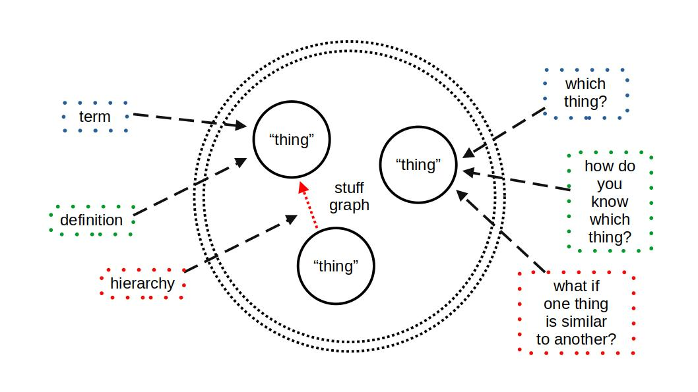

Introduction
How do you know what something is? How do we know if something is something and not something else? What is a thing?
Thousands of years after philosophers began to define the world around us, we still seek to explain and contextualize ourselves, our lives, and the places in which we live them. In recent decades, the process of definition involves massive amounts of data across dozens of information systems. These systems contain hundreds of representations: people, organizations, human and physical processes, and many more things. Ergo, the need to consolidate trillions of records across information systems is paramount for understanding the world of things around us: how representations are captured and how people make decisions based on these representations.
What follows is my experience thus far with these challenges and my lessons learned from using an upper- or top-level ontology to structure and consolidate knowledge for machine learning.
Note: I interchangeably use upper-level ontology (ULO) and top-level ontology (TLO). ISO refers to Basic Formal Ontology (BFO) as a TLO, but BFO’s official book refers to itself as a ULO. So for this blog post, they are the same thing.
Of Machine Minds and Human Madness
Back to the original set of questions: after being assigned to work on knowledge graphs, I spent the majority of 2020 and 2021 researching knowledge engineering and data engineering to support this effort. Whether it was property graphs or hypergraphs, every implementation came with challenges. Leveraging data dictionaries and consolidated schemas failed to meet modeling requirements for disparate data sets. Additionally, a massive effort to modernize data management and governance paralleled these efforts as knowledge graph models require several different considerations such as data type and additional object logic. This array of challenges drove me to seek out upper-level (e.g., top-level) ontologies such as BFO.
The use of an upper-level ontology was ultimately the solution I chose. This choice was due to several considerations. The most important consideration and a challenge experienced by many data scientists and artificial intelligence (AI) engineers were this:
Humans do not want artificial intelligence (AI). Humans want machines that replicate useful aspects of human intelligence.
So how do you teach the equivalent of a speechless child to perform adult human tasks? One solution is to throw computational power and validated models at a problem to calculate solutions as quickly as possible. The other is to give the child the equivalent of adult heuristics to attempt to make adult-like shortcuts to answers. The drive to provide AI with shortcuts is why developing ontology right is crucial while simultaneously being extremely difficult.
I ultimately chose to use Basic Formal Ontology (BFO) for my task. In addition to being an international standard certified by the ISO, BFO established consistent, positive results in the medical and biological research spaces over the decades of its existence. These results included an accelerated research cycle for critical biomedical breakthroughs and building a culture to evolve the standard to new areas over the years. This top-level rule system for building an upper-level ontology is preferable to a great ontology such as DBpedia or YAGO: a customer rarely wants to have the contents of Wikipedia in their knowledge and data management systems. A customer ultimately wants to access their essential knowledge rapidly to iterate on decision-making heuristics. This clarification of requirements allows machines to iterate quickly on calculations. At the same time, humans focus on the right questions and the most accurate scope for a decision: each contributing to the model dimensions in which they excel.
However, this ontology system’s history also proved helpful in my initial challenges. First, humans misuse words all the time. Specific and accurate language is critical for producing useful metrics when gathering data or engineering requirements. Additionally, when humans use the same words, they often use different implicit definitions. So not only must engineers monitor for consistency of word utilization, but they also have to monitor context. Next, human thoughts are rarely simple streams of logic, often emerging as spurts of rationale and circuitous statements that eventually provide a partial picture. So the engineer must consolidate multiple contexts into sets based on the words and their associated definitions. Finally (at least for this blog post), the engineer must ensure additional requirements or different projects do not shift words, definitions, or context sets. If there is a shift, provenance and legacy must be traceable within the ontology and the data artifacts connected to the ontology objects.
So not easy. Not easy at all.
The remainder of this blog will focus on a few of the biggest lessons learned for data engineering knowledge graphs using an adapted ULO.
Words Don’t Matter. Situated Meaning Does.
 Ontology - Fundamental Elements{kind=link}
References
reference
This work is licensed under a Creative Commons Attribution-NonCommercial-ShareAlike 4.0 International License.